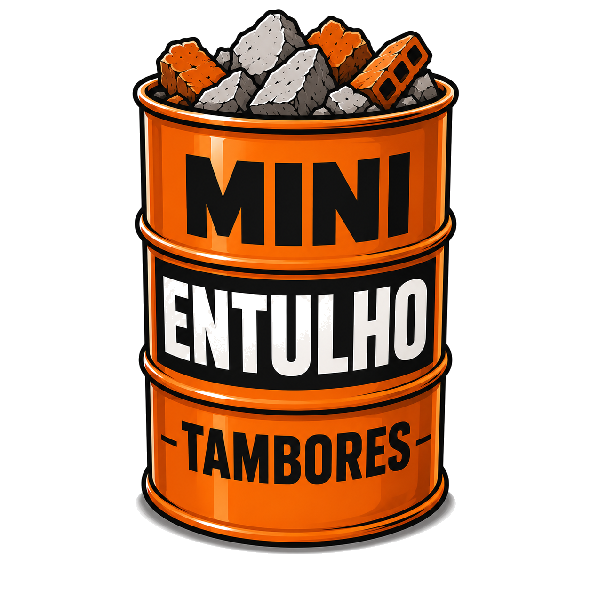
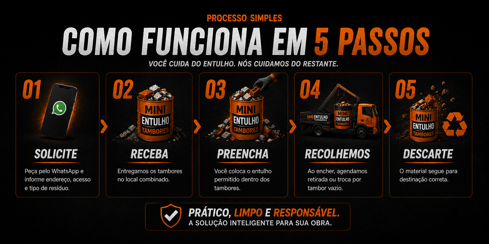
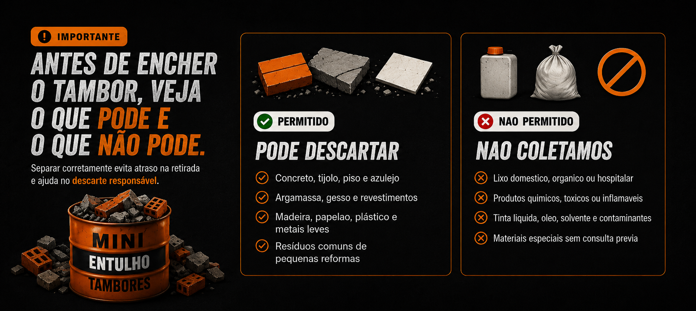

Entrega dos tambores
Mostre como os tambores chegam ao cliente e como ficam posicionados na obra.

Falar AgoraEntregamos os tambores no seu local. Voce preenche, a gente recolhe e descarta corretamente. Sem cacamba grande, sem ocupar vaga e sem burocracia.
Veja o servico
Mostre como os tambores chegam ao cliente e como ficam posicionados na obra.
Mostre a retirada dos tambores cheios e explique o destino correto do entulho.


Atendimento regional
Duvidas frequentes
A proposta principal e entregar, retirar e destinar os tambores. Se precisar de carregamento, combine no atendimento.
O prazo e combinado no pedido conforme agenda, quantidade e necessidade da obra.
Sim. O tambor e indicado para locais onde cacambas grandes nao entram ou causam transtorno.
Voce chama pelo WhatsApp e combinamos retirada ou troca por outro tambor vazio.